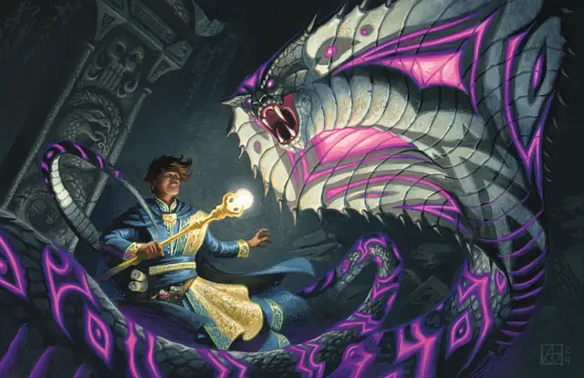

Духовная нага
Spirit Naga
Большое Исчадие, Хаотичное Злое

Класс Защиты 17 Инициатива +3 (13)
Хиты 135 (18к10 + 36)
Скорость 40 футов
| мод | спас | ||
|---|---|---|---|
| СИЛ | 18 | +4 | +4 |
| ЛОВ | 17 | +3 | +6 |
| ТЕЛ | 14 | +2 | +5 |
| мод | спас | ||
|---|---|---|---|
| ИНТ | 16 | +3 | +3 |
| МДР | 15 | +2 | +5 |
| ХАР | 16 | +3 | +6 |
Иммунитеты Яд; Отравленный, Очарованный
Чувства Тёмное зрение 60 футов, пассивное Восприятие 12
Языки Общий, Бездны
Опасность 8 (3 900 опыта; БВ +3)
Особенности
Восстановление исчадия. Спустя 1к6 дней после смерти нага возрождается с полными Хитами. Только заклинание Желание способно предотвратить срабатывание этой особенности.
Действия
Мультиатака. Нага совершает три атаки Укусом или Смертоносным лучом в любой комбинации.
Укус. Бросок рукопашной атаки: +7, досягаемость 10 фт. Попадание: 7 (1к6 + 4) Колющего урона плюс 14 (4к6) урона Ядом.
Смертоносный луч. Бросок дальнобойной атаки: +6, дистанция 60 фт. Попадание: 21 (6к6) Некротического урона.
Сотворение заклинаний. Духовная нага сотворяет одно из следующих заклинаний, не нуждаясь в Соматических и Материальных компонентах (заклинательная характеристика — Интеллект, Сл спасброска заклинаний 14):
Неограниченно: Волшебная рука, Малая иллюзия, Обнаружение магии, Подводное дыхание
2/день каждое: Молния, версия 4-го уровня, Обнаружение мыслей, Переносящая дверь, Удержание личности, версия 3-го уровня
Бонус мастерства +3
Среда обитания Подземье, Нижние планы
Сокровища Магические
Духовная нага
Злобная, хранящая обиды змея
Духовные наги ненавидят мир и всех живых существ. Обладая безупречной памятью, эти ядовитые коброподобные создания помнят каждую обиду, когда-либо нанесённую им за их бессмертную жизнь. В своих сырых безрадостных логовах они плетут изощрённые планы мести даже за самые ничтожные оскорбления.
Духовные наги стремятся заполучить то, что считают своим по праву. В их кознях часто замешаны отравления, тёмные заклинания, проклятые предметы и магическое принуждение, что со временем превращает их в источники дьявольских знаний и злого вдохновения. Прочие злодеи нередко ищут общества духовных наг как советниц и союзниц.
Совершите бросок по таблице «Обиды духовной наги» для вдохновения или определите сами мотивацию духовной наги.
Обиды духовной наги
| к6 | Духовная нага убеждена, что… |
| 1 | Персонаж виновен в её недавних неудачах. |
| 2 | Её изгнали из принадлежащего ей по праву жилища. |
| 3 | Местные жители нарушили вековой договор. |
| 4 | Другие существа насмехаются над ней. |
| 5 | Соперник за ней шпионит. |
| 6 | Некое сокровище по праву принадлежит ей. |